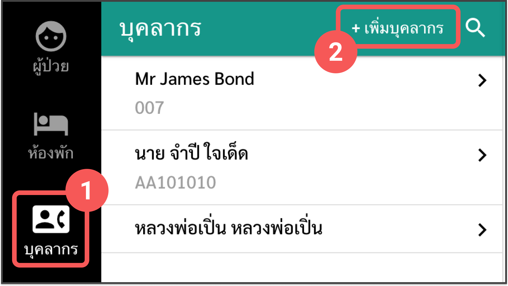
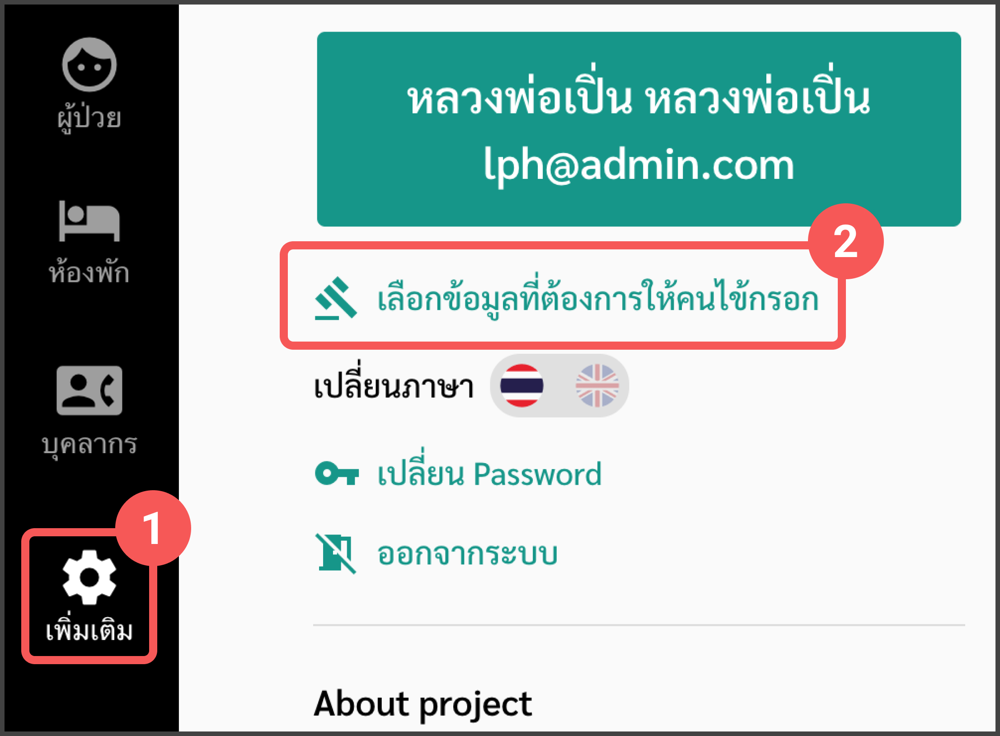

คู่มือการใช้งานสำหรับผู้ดูแลระบบ
อัพเดตล่าสุดเมื่อ 08/04/2563
คู่มือการใช้งานสำหรับผู้ดูแลระบบ
สร้างแอคเคาท์บุคลากร
- เข้าเมนู "บุคลากร"
- เลือก "+เพิ่มบุคลากร" 
เลือกข้อมูลที่ต้องการให้คนไข้กรอก
- เข้าเมนู “เพิ่มเติม”
- เลือก “เลือกข้อมูลที่ต้องการให้คนไข้กรอก” 
- เลือกข้อมูลที่ต้องการให้คนไข้กรอก (สามารถเลือกได้มากกว่า 1 ข้อ)